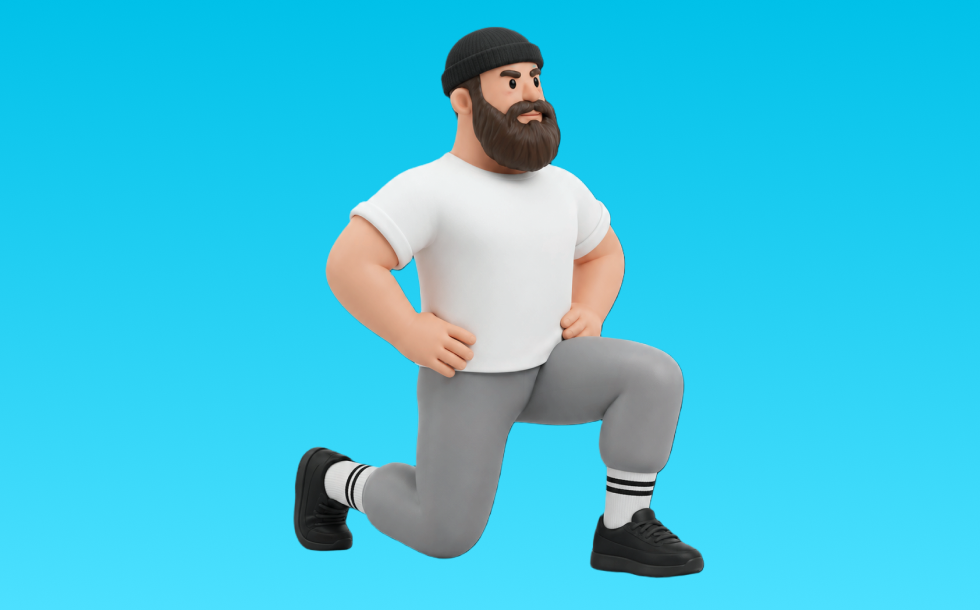

スプリットスクワット

スプリットスクワットとは、自重を使って「しゃがんで立つ」動作でお尻（臀筋）、脚（大腿四頭筋）を鍛える種目です。前後に足を開いたスプリットスタンスで、背すじを保ってしゃがみ、前脚で床を押して立ち上がる動作を繰り返します。下半身の筋力・筋量アップが期待できます。
- 対象部位
- 脚
- 器具
- 自重
- 記録形式
- 回数
- 別名
- BSS
YouTube動画
-
【初心者向け】そのやり方は大丈夫？ ポイントを理解し、スプリットスクワットの正しいやり方を学ぼう！
-
【お尻】おしり痩せに効果絶大な筋トレ！スプリットスクワット解説｜太ももを太くしたくないならマスターしてください
-
太ももを集中的に鍛える自重スクワット！「スプリットスクワット」の正しいやり方【左右 各15回×3セット】
-
バックランジとスプリットスクワットの違い バックランジのメリット 体脂肪燃焼？ヒップアップ？筋力？ブルガリアンスクワットは？
-
【スプリットスクワット】足幅など太もも・お尻に効くコツ！自宅で脚やせ可能！
-
【動作分析】「片足スクワット_スプリットスクワット」はどの筋肉をどのように動かしているの？動作ポイントと注意点について
-
【筋トレ】スプリットスクワットのやり方 | ボディビルチャンピオンが教える自重で脚を鍛える種目【ビーレジェンド プロテイン】
-
スプリットスクワットの正しいフォーム
-
【岩本健汰】スプリットスクワットとノースサウスパスの基本を解説
-
お尻が限界まで効くのはこれ！スプリットスクワットなら、お尻と裏ももを追い込んで丸くて高いお尻ができる
-
【自宅筋トレ】なかやまきんに君の正しいスクワットを学ぼう。
-
【最強の筋トレ】スクワットのやり方。フォーム・足幅・深さなどで効果は変わるのか？
-
【種目別トレーニング】筋力トレーニング56 スプリットスクワット
-
前もも張らない！すっきり脚をつくるスクワット＆ブルガリアンスクワットはこうやって💪
-
大腿四頭筋の筋肥大に最も良い種目は？【大腿四頭筋のティアリスト】
-
【DIGEST】筋トレで「壊れない」身体を手に入れろ／究極のスクワットフォームを伝授／「床を掴む」 トレーニングで意識革命／あなたの足が覚醒するランジ／コスパ最強「時短」身体論
-
【３分でできる】もっと脚トレ ！「スプリットスクワット」
-
【脚トレの常識】ブルガリアンスクワットをやらないのはもったいない！【筋トレ】
-
【スプリットスクワット】下半身の筋力アンバランスを修正し体幹を強化する理想的なエクササイズの魅力とポイントを解説
-
【岩本健汰】ノーギ最新トレンドのスプリットスクワットを基礎から解説
YouTubeショート
-
【スプリット・スクワットの正しいやり方】大腿四頭筋を鍛え、強靭な太ももをゲットせよ！ ｜Training Movie 100｜Tarzan Web
-
【ブルガリアンスクワット】フォームのミスあるある。狙いたい部位を意識して、正しいフォームでやってみましょう！💪#GronG #グロング #筋トレ #フィットネス #脚トレ #ブルガリアンスクワット
-
脚の鍛え分け！スプリットスクワット編！ #筋トレ
-
【スプリットスクワットフォームチェック】#ダイエット #痩せる #産後ダイエット #トレーニング #筋トレ #shorts
-
ミニマリスト脚トレ3種目を紹介 #フィットネス #筋トレ
-
スクワット初心者に多い腰を痛めるしゃがみ方と改善方法
-
スプリットスクワットのコツ早見表 #shorts
-
【脚が太くならないスクワットのやり方】 #脚痩せ #スクワット
-
スプリットスクワット #筋トレ#パーソナル#加圧トレーニング
-
【清水聖一】足鍛えないヤツ見て！スプリットスクワット効果爆上げ方法#shorts #トレーニング
-
ブルガリアンスクワットの正しい足の決め方 #筋トレあるある #脚痩せ #ブルガリアンスクワット
-
【自宅トレ】効果抜群🔥スプリットスクワット❗️
-
【ブルガリアンスクワット】3つのポイント #パーソナルトレーナー #筋トレ #脚トレ #下半身トレーニング #ブルガリアンスクワット
-
修行計画 スプリットスクワット編‼️#ダイエット #スクワット #川崎パーソナルジム #引き締め #マシンピラティス
-
これやってると痩せない？！間違っているスクワット#shorts
-
太るスクワット・痩せるスクワット #squat
動作方法
- 足幅を決め、体幹を固める
- 股関節と膝を同時に曲げて下ろす
- 足裏全体で床を押して立ち上がる
動作ポイント
- 膝とつま先の向きをそろえる
- 胸を落としすぎない
- かかとを浮かせない
ワンポイントアドバイス
- ウォームアップで股関節と足首を動かす
- 高重量の日はセーフティ設定を確認する
目的別回数設定
目的や体力に応じた一般的な目安です。無理のない範囲で調整してください。
- 筋力アップ
- 1〜5回
- 筋肥大
- 6〜12回
- 持久力アップ
- 13〜20回
YouTube動画について
動画はYouTubeの公開情報をもとに表示しています。内容は投稿者によるもので、Biggrによる監修ではありません。
アプリを入手
筋トレやトレーニングの記録はBiggrにお任せください。今すぐ無料で使い始められます。